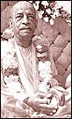

| |
Karatalas
| Karatalas (manjira) are small
Indian hand cymbals used at most ISKCON temples during devotional
songs. They are used to emphasise the tal (or beat) of the
songs. These cymbals are an easy musical instrument which all devotees
can use. They involve banging the two cymbals in rhythmic fashion
to the song. |
|

|
|